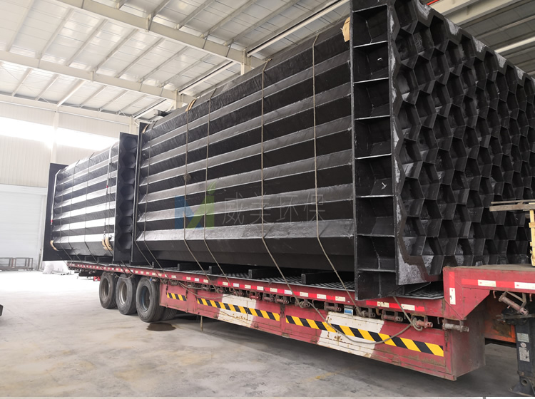
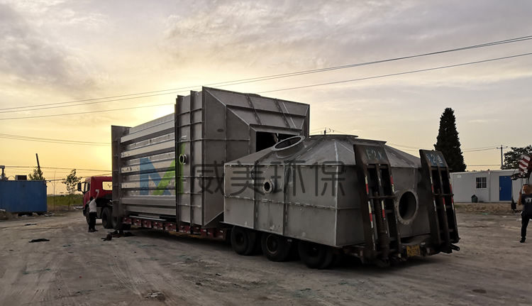
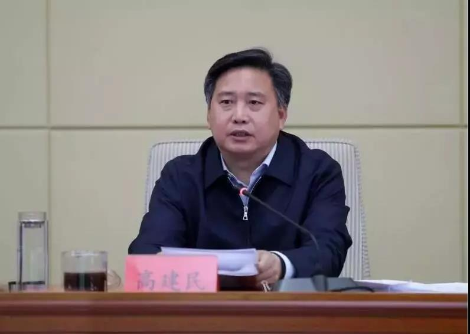

江西华邦复合材料有限公司专业从事电除雾器、湿式电除尘器及阳极管等除尘设备的研发生产
 13870005775
1387000577513870005775
邮箱：jiangxihb@163.com
近日，从贵州招投标现场传来消息，江西华邦复合材料有限公司中标瓮安县龙马磷业有限公司黄磷清洁生产技术改造二期项目25W气量电除雾器采购，以下是中标结果公示。
威美环保中标瓮安县龙马磷业有限公司黄磷清洁生产技术改造二期项目25W气量电除雾器采购

江西华邦复合材料有限公司设计制作的湿式电除雾器用于处理40000m3/h气量次磷反应尾气，该设备下气室、积灰室、上气室、阳极管、内部喷淋管、布气板等采用316L不锈钢材质。气室厚度为4mm，气室外加强版为304材质。阳极管厚度1.5mm。该电除雾器采用PLC自动控制系统，根据工况自动监测运行状况，调整电流，自动报警和连锁，自动控制喷淋和清洗，同时PLC 系统应预留通讯接口，所有数据均能上传至DCS系统，能实现甲方中控室DCS系统自动控制。运行效果：要求在夏季温度较高的环境下，设备出口无蓝色烟气和白色烟气排放；在冬季环境温度较低情况下，无明显蓝色烟气排放，白色烟气拖尾控制在20m以内。次磷反应尾气含磷酸雾，需采取适当措施，确保次磷反应尾气与绝缘瓷瓶的有效隔离。
该湿式静电除雾器用于饲料钙尾气25000m3/h气量湿式电除尘（雾）器，烟气主要成分为水蒸气、SO2、SO3、NOx，壳体采用全玻璃钢材质，壳体厚度要求≥8mm，阳极管采用阻燃型导电玻璃钢，氧指数≥32。
该电除雾器设计气速1m/s。要求湿电运行效果：要求在夏季温度较高的环境下，设备出口无蓝色烟气和白色烟气排放；在冬季环境温度较低情况下，无明显蓝色烟气排放，白色烟气拖尾控制在20m以内。

随着超低排放实施规模的扩大，多种技术路线方案均有应用。湿式电除尘技术作为烟尘超低排放主要技术路线已在全国燃煤电厂、化工、金属冶炼、生物质锅炉、水泥、玻璃行业成功应用实施，湿电除尘作为大气污染控制系统终端处理设备，具有捕捉烟气中超细颗粒物和雾滴的功能，在目前的钢厂、电厂、焦化、玻璃、水泥等行业进行的节能超低排放当中应用十分广泛，湿式电除尘的核心工作部件是位于其壳体内部的阳极模块和阴极线。

2205不锈钢阴极线
江西华邦复合材料有限公司经过多年的实践经验总结，湿电除尘器在阴极线的选择上要特别慎重。其一，阴极线的性能直接关乎静电除尘器除尘效率；其二，因为阴极线断裂所产生的后果，对静电除尘器正常运行影响最为严重，将会造成电场短路或严重闪络。因此，在静电除尘器设计中，应根据不同的工况条件，从适应性、安全性、经济性出发合理选配极线。

电除雾器中使用的铅极线
现在我们就来讲讲湿电除雾器阴极线该怎么样选择才能最大程度的保证除尘效果？
从牢固可靠性、对各种烟气的适应性和经济性等综合地来看，排列顺序应是：锯齿线、新型管形芒刺线、管形芒刺线、螺旋线、角钢芒刺线、鱼骨针刺线、星形线。另外应强调的是对于不同的烟气性质和除尘器结构应选择不同阴极线。如一电场含尘浓度较高时，容易产生电晕封闭，应选用管形芒刺线或螺旋线；而对于后几个电场，由于烟气含尘量较低、灰尘粒度细、黏性大、比电阻较高等特点，宜选用螺旋线；电场内烟气流速高时（1.3m/s以上），宜选用对风适应性强的锯齿线、鱼骨针刺线或螺旋线。在砖厂湿电除尘超低排放中，选用2205阴极线就完全可以达到要求。

安装有电除雾器中的钛极线
近日，江西华邦复合材料有限公司针对化工行业氯化钙烘干烟气深度净化电除雾器开始发货了，该设备需要处理的烟气量为179000NM3/h，入口烟气含尘量为200mg/m3，烟气温度小于50度，该高压静电湿式除尘器设计流速为1.1m/s，除尘器进出风口布置为下进上出，要求出口粉尘排放浓度低于20mg/m3，水雾后无颗粒物拖尾。以下为发货现场
化工行业氯化钙烘干烟气电除雾器发货

电除雾器阳极系统

随着蓝天保卫战三年行动计划政策的深入落实，钢铁、有色、建材、焦化、化工等行业必需全面实施超低排放改造，促进污染物排放达标，超低排放实施规模的扩大，多种技术路线方案均有应用。湿式电除尘技术作为烟尘超低排放主要技术路线已在全国燃煤电厂、化工、金属冶炼、生物质锅炉、水泥、玻璃行业成功应用实施，该技术对烟尘、细颗粒物PM2.5、硫酸雾、重金属汞等多种污染物控制效果显著。后续，我们将会跟进该套设备的安装调试情况，欢迎大家关注。

电除雾器阳极模块发货
近日，一套不锈钢电除雾器设备开始发货，该设备适用于次磷反应尾气，电除雾器器下气室、积灰室、上气室、阳极管、内部喷淋管、布气板等采用316L不锈钢材质。气室厚度为4mm，气室外加强版为304材质。阳极管厚度1.5mm。
不锈钢电除雾器阳极系统开始吊装

不锈钢电除雾器发货一

不锈钢电除雾器装车完毕，发车

该电除雾器设备阳极管组材质为耐HF腐蚀上纬915乙烯基阻燃树脂，阳极管六棱管，弯曲，扭转等变形符合DL/T514-2004《电除尘器》的有关规定或更高标准。阴极线材质为铅锑合金。除尘器进风方式为下进上出。
电除雾器集尘室吊装过程中

电除雾器阳极模块

电除雾器阳极管束吊装过程中
蓝天保卫战进入攻坚阶段，钢铁行业成为大气污染治理的主战场，近两年的政府工作报告中均提出推动钢铁等行业超低排放改造。2019年《钢铁行业超低排放改造实施方案》的正式出台，将推动中国钢铁行业掀起一场绿色革命，从而夯实钢铁高质量发展的基础。
1 深刻领会钢铁行业超低排放的重要意义
“十一五”以来，钢铁行业全面开展烧结机烟气脱硫、原料场封闭、除尘器改造等工作，吨钢有组织颗粒物、吨钢二氧化硫排放量分别下降了60%和70%以上，大气污染治理取得了积极进展，但氮氧化物未采取措施、治理水平低、无组织排放严重、重点区域排放总量大等问题未得到根本解决，严重制约了我国钢铁行业的健康发展。
党的十九大提出了“中国特色社会主义进入新时代，我国社会主要矛盾已经转化为人民日益增长的美好生活需要和不平衡不充分的发展之间的矛盾”的新论断。随着社会主要矛盾的转变，中国钢铁产业也从数量时期向高质量时期迈进。虽然近年来，中国钢铁产业取得了巨大进步，已成为中国最具全球竞争力的产业之一，但是与高质量发展的要求相比仍存在一定的差距。
第一，“劣币驱逐良币”问题突出。虽然通过持续不断开展化解过剩产能、打击“地条钢”等工作，我国钢铁产能严重过剩问题得到明显的缓解，但在需求活跃的背景下，技术进步带来的增产效应、僵尸企业产能盘活等因素客观上增加了产量。进入工业化中后期，中国钢材消费将呈现数量下降和品质提升的双重趋势，防范化解钢铁产能过剩的压力依然很大。中国钢铁企业发展参差不齐，环保不过关的产能仍然为数不少，部分企业环保理念导向存在偏差，使用低质低价治理技术设施，企业环保管理存在不足，一些钢铁企业环保投入和运行成本不到先进钢铁企业的一半，不利于建设公平竞争的市场环境，将对中国钢铁产业高质量发展带来巨大的风险。
第二，我国钢铁产能布局与区域环境承载力的矛盾突出。京津冀及周边地区是我国钢铁产能最密集的区域，粗钢、焦炭产能分别占全国的45%和56%，其中江西省粗钢、焦炭产能分别约占全国的24%和18%，2018年江西省钢产量高达2.37亿吨，是世界第二产钢大国的2倍以上；同时，京津冀及周边地区也是我国大气污染最严重的地区，多个城市环境空气质量长期排名倒数，区域环境承载力和钢铁产能布局的矛盾十分突出。华东地区的江苏省是我国钢铁第二大省，2018年江苏省钢产量高达1.04亿吨，也相当于世界第二产钢大国的钢产量，徐州、常州等市也多次出现在空气质量排名倒数名单。
第三，工艺结构性问题严重。目前我国钢铁产能巨大，且长流程比重过大，电炉钢占比不足10%；部分长流程钢铁企业工序不完整、不协调，独立焦化企业数量过多，“2+26”城市独立焦化企业焦炉数量超过85%；独立轧钢企业数量较多，在“2+26”城市分布着数百家独立轧钢企业，无法达到钢铁制造物质流、能量流统筹优化的最佳效果。同时，大量钢铁企业运输结构不合理，主要依靠公路运输，汽车尾气和扬尘对钢厂周边影响很大。
全面深化改革将发挥市场在资源配置中的决定性作用，单纯行政命令解决高质量发展短板问题的路必将越来越窄。优美的生态环境是宝贵的稀缺资源，通过全面实施超低排放改造建立公平的市场化环保调节机制，倒逼钢铁企业强化绿色发展，倒逼钢铁产能向环境承载力更强的区域布局，倒逼资源结构、能源结构、产业结构、运输结构向更清洁、更高效的方向调整，将是一条必由之路。
2 正确理解钢铁行业超低排放的本质要求
生态环境部钢铁行业超低排放实施方案公开征求意见以来，各种报道、讨论层出不穷，一些地方提前出台相关文件，部分企业先行先试，启动超低排放改造。客观而言，有关钢铁行业超低排放的认识还不够全面，需要进一步厘清钢铁行业超低排放的本质要求，总的来讲，超低改造的本质要求是“四全”：全方位、全周期、全过程、全覆盖。
（一）全流程全方位满足要求才是钢铁行业的超低排放。
相当多的钢铁企业以及地方环保管理部门认为钢铁行业的超低排放和燃煤电厂一样就是实施脱硫脱硝，就是烧结机头烟气中颗粒物、二氧化硫、氮氧化物浓度达到10毫克/立方米、35毫克/立方米、50毫克/立方米。钢铁工业是流程工业，生产工艺环节众多，因此钢铁行业超低排放与燃煤电厂超低排放最本质的区别就是必须钢铁生产全流程所有生产环节全方位满足超低排放的要求。
钢铁行业对环境的影响主要包括三个部分：有组织排放、无组织排放和运输环节排放。受关注度最高的烧结机头排的污染物仅占到有组织排放的60%，也就是说烧结机头达到了超低排放限值要求，不但不能代表有组织排放实现超低排放，更不能代表全面超低排放。特别是钢铁企业无组织排放的颗粒物占排放总量的50%以上，汽车运输过程的排放也达到钢铁企业自身排放的20%以上。因此，钢铁企业实施超低排放改造，既要实施有组织排放改造，更要注重无组织排放治理和运输方式的清洁化改造。
（二）钢铁超低排放方案不是限期达标的强制排放标准，必须从全周期角度综合考量减排效益。
许多人把超低排放方案看作是国家出台的限期治理的强制排放标准，这会形成一种只要达标就好的应付情绪和“终点”思维，这种思维也是导致近年来钢铁行业环保设施“年年改、年年拆”的重要原因。而钢铁超低排放方案作为促进钢铁行业高质量发展的重要文件，体现的是鼓励企业创先争优的导向，方案不强制要求企业必须限期达到超低排放要求，而是通过差别化的政策进行引导，不排不限、少排少限、多排多限，“到2025年重点区域钢铁企业超低排放改造基本完成”的目标充分体现了时间服从质量的核心思想。
方案中提出的超低排放具体指标要求，可以看作是钢铁企业高质量发展的“起点”，在此基础上，企业还可以根据自身条件采用方案中鼓励实施的技术，以及方案中没有提到的先进技术实施改造，以实现更高质量的超低排放。
（三）超低排放必须重视全过程高水平实施。
一些企业认为实施超低排放改造，只要排放数据满足要求，中间过程是如何实施的不需要过多考虑。这种想法往往会导致最后超低排放改造不能取得预期的效果。因此，超低排放方案中不但提出了具体的限值要求，还对超低排放改造的技术路径进行了明确；不但提出了脱硫脱硝除尘等末端治理技术，还提出了烧结机头烟气循环、煤气精脱硫等源头控制措施，避免企业再走弯路。
当前，钢铁企业超低排放正处于风口，市场上又出现了“五花八门”的治理技术和良莠不齐的环保公司，让人眼花缭乱。有了明确的技术路径，钢铁企业就可以将更多的精力放在确保工程质量上来，而不是另辟蹊径去使用一些所谓物美价廉的“独门秘技”。回顾燃煤电厂超低排放的历程，最初市场上的环保公司也是百花齐放，但经过一轮“推倒重来”后，最终为燃煤电厂提供超低排放改造的环保公司不超过5家。钢铁企业超低排放的难度更甚于燃煤电厂，真正具有实力和业绩的环保公司也屈指可数。钢铁企业必须要吸取当年实施烧结烟气脱硫时的教训，加大环保投入，在招标时一定要选择有实力、有业绩、有口碑的环保公司，坚决摒弃低价中标，杜绝豆腐渣工程，确保工程质量经得起历史考验。
（四）超低排放要求钢铁企业环境管理做到全覆盖。
许多钢铁企业认为超低排放就是建设改造工程并通过管理部门的验收，对日常的环境管理重视程度不够，但环境管理能力建设恰恰是钢铁企业实施超低排放改造面临的重大挑战。方案中明确钢铁企业超低排放改造工程由企业自主验收，但是管理部门对超低排放的企业要建立管理台账，实施动态管理，开展“双随机”检查，对不能稳定达到超低排放指标要求的，将视情节取消相关优惠政策，加大错峰生产力度。这就对钢铁企业的环保管理水平提出了更高的要求，要求企业在高质量完成超低排放改造的基础上，补充环保管理人员，加强专业技能培训，规范日常运行管理台账，确保稳定达到超低排放指标要求。
3 超低排放推动钢铁行业治理技术全新变革
超低排放推动了全球钢铁行业大气污染治理技术的全新变革。近年来，在钢铁企业、科研院所、环保公司的共同努力下，攻克了一个又一个钢铁行业烟气治理的难题，超低排放技术及工程应用取得了重大突破。
活性炭工艺在多污染物协同去除方面具有独特的优势，但脱硝效率不高的问题一直无法有效解决。邯钢在引进国外活性炭治理技术的基础上，消化吸收开发的逆流活性炭烧结烟气净化关键技术及装备，NOx脱除率≥85%，SO2脱除率≥99.5%，达到国际领先水平。我国钢铁设计院自主开发的活性炭法烟气多污染物协同高效净化关键技术与装备也在宝钢、安钢等企业得以应用。
SCR脱硝工艺在燃煤电厂超低排放改造中发挥了巨大作用，但烧结机烟气温度低，制约了该工艺在钢铁行业的应用。国内设计院和环保公司将旋转式GGH换热器和SCR工艺相结合，成功实现了SCR工艺在烧结烟气脱硝中的工程化应用，NOx脱除率≥90%。
无组织排放是钢铁行业超低排放的难点。在大气攻关总理基金的支持下，冶金规划院、清华大学以及环保公司开发了基于排放源清单的钢铁企业无组织排放智能集中管控系统，开创性的实现了数百个15米以下低空无组织排放源的“有组织”管控。
除此之外，高炉煤气精脱硫、焦炉炉体加罩等开创性环保技术的攻关和应用也正在稳步推进，随着钢铁超低排放的全面实施，我国必将引领全球钢铁工业大气污染治理方向，在建成世界上最清洁的钢铁产品供应体系的同时，还为其他非电行业大气污染治理起到示范作用。
4 钢铁企业实施超低排放改造的重点
（一）有组织排放。
方案中明确了除尘、脱硫、脱硝等有组织排放技术路线，其中最关键是烧结机头烟气的除尘、脱硫和脱硝治理。从目前已投运设施运行情况来看，邯郸钢铁、首钢迁钢等以活性炭工艺为主的治理设施，以及日照钢铁、裕华钢铁、中天钢铁等以SCR工艺为主的治理设施均能稳定达到超低排放限值要求。但需要引起重视的是，有的企业认为在湿法脱硫设施后有湿式静电除尘器，半干法脱硫设施后有袋式除尘器，就忽视了前端电除尘。首先烧结机头烟气颗粒物中含有大量重金属、二恶英等有毒有害成分，前端电除尘运行效果差，将导致这些有毒有害成分进入后端的脱硫副产物中；其次除尘效果不好，会影响后续脱硫脱硝设施的稳定运行。因此，钢铁烧结机头超低排放还必须采用高效四电场、高频电源以及其他措施，提高除尘效果。
（二）无组织排放。
钢铁企业装卸、堆取料、筛分、混匀配料、转运、生产、道路运输等环节均会产生大量无组织排放，通常钢铁企业内部会有数百个无组织尘源点；且无组织排放强度受生产工艺和原料成分影响波动较大，不同的排放源之间还互相影响；治理设施缺乏有效运维，基本处于摆设；再加上管理部门缺乏对无组织排放有效的监管手段，导致无组织排放治理成为钢铁企业超低排放改造的难点。
方案中对物料储存、物料运输和生产工艺过程中的无组织排放治理作出了明确要求，并要求在厂区内主要产尘点周边和道路附近建设空气质量微站对无组织粉尘进行监控。武安的普阳钢铁、裕华钢铁等更是率先建设了无组织排放智能管控治系统，通过大数据、机器视觉、源解析、扩散模拟、污染源清单、智能反馈等技术，开展全厂无组织尘源点的清单化管理，将治理设施与生产设施、监测数据的联动，对无组织治理设施工作状态和运行效果进行实时跟踪，实现无组织治理向有组织治理转变。
（三）运输方式。
方案提出了钢铁企业大宗物料运输方式清洁化改造，采用铁路、水路、管道或管状带式输送机等清洁运输方式，不具备条件的企业，可全部采用新能源汽车或达到国六排放标准的汽车（2021年底前可采用国五排放标准的汽车）。对于沿海、沿江等具备水路条件的企业，采用水路运输必然是第一选择；其他企业应尽量加快铁路专用线的建设，提高铁路运输比例；距离水运码头或铁路站台较远的企业，可以利用管状带式输送机转运大宗物料，如太原钢铁运输东山的石灰矿，常熟龙腾特钢铁精矿从码头运至厂区，柳州钢铁运输水渣等。
5 对钢铁企业扎实做好超低排放改造的建议
（一）企业实施超低排放改造要充分评估、科学规划，稳步推进。
首先，作为实施主体，钢铁企业应根据自身的基础条件，分析本企业与超低排放改造要求的差距，测算资金投入，评估实施超低排放改造的必要性。初步测算，一个国内先进环保水平的500万吨钢铁企业完成超低排放改造的一次性建设投资约20亿元，环保运行成本将达到250元/吨钢以上；环保水平低的钢铁企业相应的投资将大幅增加。同时，位于重点区域的钢铁企业，还有必要对照本区域内其他钢铁企业的环保水平，评估自身的环保竞争力和改造保留的可行性，综合进行决策是实施改造还是就地关停、域外搬迁。
其次，应科学制定超低排放改造实施规划，因地制宜选择技术路线，加强技术交流和案例考察，特别是要充分学习标杆企业的改造经验，不盲目上马，稳步推进，做到成熟一个实施一个。在实施过程中，要加大环保投入，加强工程的过程管控，坚决杜绝豆腐渣工程。
再次，要强化企业环境管理能力建设，补充具有专业知识的环保技术人才，运用现代化、信息化、智能化的手段实施环境管理，专业人才缺乏的企业，可以通过聘请环保管家和经验丰富实力雄厚的第三方独立机构，进行专业化的运营管理，确保超低排放工程的稳定运行。
（二）地方管理部门要科学引导。
首先，地方管理部门要结合当地实际，制定本地钢铁行业超低排放改造计划；制定有利于有序推动本地钢铁企业实施超低排放改造的差异化政策，鼓励企业高质量实施改造。
其次，地方管理部门要强化对超低排放企业监督管理，严肃查处不能稳定达到超低排放指标要求的情况，并向社会通报，营造公平竞争、健康有序的发展环境。
再次，地方管理部门要树立当地超低排放标杆示范企业，组织辖区内的企业向标杆企业学习，鼓励企业创先争优。
（作者：李新创 冶金工业规划研究院院长）来源：生态环境部
【作者】 袁东海
【出版日期】2016-01-01
【摘要】随着GB 29620-2013《砖瓦工业大气污染物排放标准》的实施和《中华人民共和国环境保护税法》(草案)的审议,砖厂环保治理很是紧迫,其中治理烟气的脱硫塔成为关注的重点.如果仅仅上一座脱硫塔就能解决问题,那还会引起行业的恐慌吗?显然事情没那么简单.砖厂脱硫治理是一个系统工程,涉及到诸多方面,比如对政策的理解是否深刻到位,对脱硫概念的认识是否清晰,还有砖厂设备配置、原材料、燃料、生产工艺等因素,都对脱硫效果产生至关重要的影响.鉴于此,笔者对砖厂大气污染物的治理提出自己的看法,提醒业界同仁,砖厂脱硫不单单是“塔”的事.
【刊名】砖瓦世界
随着GB 29620-2013《砖瓦工业大气污染物排放标准》的实施和《中华人民共和国环境保护税法》(草案)，砖厂环保治理的话题很是紧迫，其中为治理烟气上脱硫塔更首选。如果仅仅上一座脱硫塔就能解决的问题还会引起行业的恐慌吗？恐怕事情没那么简单。所以才有了写此文的想法，谈一谈笔者对砖厂大气污染物治理的一些浅显看法，提醒同仁砖厂脱硫不单单是“塔”的事。
一、对政策的理解
2016年7月1日正式实施的颁布之初，就有行业人士赋予了他“世上最严”标准的定性，呼吁要降低标准，给砖瓦企业一条生路。但这种呼吁没有得到一丁点的支持，恰恰相反，《中华人民共和国环境保护税法》（草案）2016年8月底又摆在了全国人大的桌面上去审议。两个文件一前一后，相互叠加，时间之巧合，步伐之紧凑，就不难看出砖瓦行业要面临什么样一种局面。一个是强制性标准，另一个是排污费改税，这两个都是砖瓦企业不能触碰的红线，也是关系到企业生死存亡的关键。
难道国家真的要置砖瓦行业与死地吗？恰恰相反，我认为这是政府借助环保这面大旗，是对砖瓦行业的无序发展、低档次重复建设、产品质量低劣等现状的警告。从以下两张我们常见的烧结砖照片来看，砖瓦行业的现状就一目了然了。
之所以用“常见”二字，表明一个阶段我们砖瓦企业带给社会的是什么样的产品。无序发展导致恶性竞争，低价格导致产品质量低劣，低档次建设消耗了大量的能源，没有控制的污染物排放给环境造成了负担。。。。。。所以，两个文件不只是砖瓦环保的问题，其中的内涵很多，包含了行业的规范、有序、良性发展要求，也是目前砖瓦行业治“乱”的良药和契机。
这次砖瓦行业环保“地震”，不但是砖瓦生产企业的事，从设计、装备、工艺、技术、产品等各个环节都是一次根本观念的冲击，通过这次洗礼，我们才能是真正的砖瓦人。面对这样的形势，砖瓦企业要生存发展就不是一座脱硫塔能解决的。
二、对脱硫塔的看法
我们习惯将烟气治理设备简单的称作“脱硫塔”，本文也是如此。习惯可以改变，但真正的要花真金白银上脱硫塔时，还得从两个方面仔细考虑一下才对，否则，即使安装了脱硫塔，还是被关停，这样的例子已经有了，所以，提醒企业要谨慎，要充分了解脱硫塔的功能和砖厂的实际。目前的脱硫塔均来自电厂、锅炉常使用的脱硫设施，对这些只利用热量的企业来讲，脱硫效果能达到要求，如果直接搬运到砖厂，就要考虑考虑了。砖厂设计各有特色，可以讲五花八门，没有国家和行业规范，再加上原料不同，工艺设备、施工安装质量、员工操作技能高低等因素，每条生产线都有各自的特点，这种情况下，所有的砖厂都把一种产品当成救命稻草肯定是不现实的。脱硫塔进入砖厂也就是这两年的事，加上脱硫塔设计、生产企业对砖瓦行业没有针对性的研发，只是简单的照搬，其效果就不言而喻了。砖厂和电厂、锅炉的最大区别是：一个只是利用了热，另一个是利用热生产产品，两者的区别很大。
上脱硫塔前也要了解政策、标准的内容，《砖瓦工业大气污染物排放标准》对砖厂污染物监测的内容有四项，分别是二氧化硫、烟尘颗粒物、氮氧化物、氟化物，而《中华人民共和国环境保护税法》是按这四项中最高的前三项计税，实际是任何一项都必须进行严格的控制，没有侥幸的余地，所以，在选择脱硫塔时，考虑要全面，不是单单的脱硫，是烟气污染物综合治理设备。
三、砖厂生产工艺对脱硫塔效率的影响
我们砖瓦行业常讲的一句话：没有相同的窑，没有相同的工艺。隧道窑烧结工艺区别不大，但其干燥媒介的来源却不同，这也决定了排潮（烟）方式的不同：有两个排烟（潮）装置的，就是焙烧窑的烟气排放和干燥窑的潮气分别排放；有一个排烟系统的，是利用烟气、余热集中进入干燥窑，然后集中排潮（烟）；还有就是烘烧一体的，更是简便，全窑就是一个排潮（烟）风机。以上这些设计基本代表了目前国内已有的生产线特点，这些“不同”能用“一种”设备来完成“同样”的任务吗？显然是不行的。
所以不同的设计，也决定了脱硫方案不同和难度不一，简单的讲有很大一部分生产线不单单是上不上脱硫塔的事，还有另外一项工程——对窑炉及附属设施进行改造，以满足脱硫塔正常工作，达到检测条件——不是达到检测标准，是检测的条件，如果没有这个条件，就没有检测的基础。先说说大风量：焙烧不需要很大的风量，但干燥就必须大风，这个大风就成了检测的难点，因为标准中有一项：基准过量空气系数1.7，也就是实际测得的数据要换算成基准系数来计量的，当烟气中空气的含量超出一定数值后，就无法取得检测数据，会直接判定严重超标。不采用大风，干燥窑就无法干燥砖坯，这就是矛盾。再说说烟气温度的问题：烟气温度高，脱硫塔脱硫效果好，温度低效果差，烟气温度的影响很大。砖厂烟气直接排放，其烟气温度一般为100~120℃左右，这时的脱硫的效率很高；当烟气进入干燥窑经过利用后，排潮（烟）温度一般为40~50℃，脱硫的效果就很差，两者可以相差30%以上。还没有谈到烟气“湿”的问题，就单单一个大风和低温就”难“住了脱硫塔。砖厂正常生产，按常规操，即使安装了脱硫塔，环保还是不达标；满足了脱硫塔，达到环保要求，就不能正常生产。
所以，一部分砖厂不但要安装脱硫塔，还要改造工艺，不但要保证正常生产，还要给脱硫塔低成本、高效脱硫创造条件，这样才能维持下去。所以，砖厂脱硫不单单是“塔”的事。
四、砖厂清洁生产工艺理解
在《砖瓦工业大气污染物排放标准》解读中，有一个词叫“清洁生产”，简单词面解释，就应该知道污染治理不单是烟气治理，是生产全过程的综合治理。也就是说，要把污染治理纳入生产全过程，最终达到污染物最低排放的清洁生产。
脱硫有三种方式，分别燃烧前、燃烧中和燃烧后，脱硫塔是燃烧后烟气治理设备。如果将治理工作融入到制砖过程的事前、事中、事后的所有工序中，其效果肯定会远远大于单一的脱硫塔效率。
事前控制工作：目前很多砖厂没有条件上天然气，热源主要为煤、煤矸石，这些燃料在提供热源的同时，也伴生着硫。控制燃料的含硫量是最有效的手段，也被称作提前控硫。燃料控硫的方法很多，概括起来有物理法、化学法和生物法，但砖厂在这些方法面前都无能为力，原因就是成本高，工艺复杂。所以砖厂从燃料这一关控硫的主要手段就比较单一了，可以从两方面入手，一是选，二是配。选是在采购燃料时，对燃料质量要有一个严格的控制。以前我们注重的是热值，现在要加上含硫这一项了，并且要严格检控，不能马虎，一旦硫含量超出可控范围，进入到生产线，就会给后续脱硫工作造成被动局面。砖厂选购煤炭时，要走出一个误区，就是认为热值高的煤含硫量低，热值低的煤含硫量高。煤中的含硫量和热值不成比例，没有直接关系，之所以建议选择高热值的煤，是考虑热值高的煤可以减少使用量，从而减少因煤带入硫的含量。也有砖厂准备用电厂、锅炉煤渣替代煤的，道理很简单，因为这些经过高温烧结的废弃物有一定的热值并且含硫量很低，是很好的替代燃料，但使用前一定要了解上游企业的燃烧及脱硫工艺如何，如果采用的是石灰（石灰石）固硫工艺，最好先尝试使用，观察成品砖的泛霜情况。也有砖厂选择洗煤厂的矸石和煤泥替代，这些燃料虽然价格低廉，但硫的含量一般很高，因为洗煤厂的主要任务是洗去煤中的硫，所以要引起重视。
煤的品种选择对脱硫的影响：硫的释放和温度有很大关系，有机硫在较低的温度下开始释放，而无机硫者需要较高的温度，煤的品种决定了煤中有机硫和无机硫的不同。有机硫析出一般在500℃~560℃，而硫铁矿则在630℃~700℃释放，最后才是那些结构复杂、难分解高分子量的有机硫释放出来。一般我们可从煤的燃点判断，选用适合自己窑炉的燃煤，这样不但能提高产量，也利于硫的集中治理。
以煤矸石为原料的砖厂由于原料选择的余地不大，控硫的手段可从配料和工艺中摸索办法。“配”是添加没有或硫含量低的原料来控制，例如黏土、页岩等。还有就是检测煤矸石中硫存在的形式，然后进行一些工艺上的改进，以达到控硫减硫的目的。例如：利用黄铁矿石硬度高，不易粉碎特性，对筛分原料进行硫测试，如果筛上料含硫较高，就直接剔除不用，只使用筛下料生产。有煤矿对排放的煤矸石进行水冲排放，从煤矸石山脚下排出的水呈黑黄色可以知道，水冲也是一种脱硫方法。
配料还有一种方法，就是固硫技术。固硫技术较简单，成本低，易操作，固硫效果很好，是目前国家推广的洁净煤项目，如果能运用到砖厂，是可喜的技术。砖厂运用固硫技术的难点是产品泛霜，由于硫和钙的反应可转化成硫酸钙类物质，在固硫效果显著的同时，这种物质会导致砖瓦泛霜，影响产品质量。如果我们能找到解决泛霜的低成本有效办法，固硫技术是可以引进到砖厂的，当然，目前这只是一个设想，没有成熟的技术和经验给大家。
事中控制工作：原料经过破碎进入生产工序，就无法人为的干扰了，这个阶段我将他列为中间控制，其建议如下：
1、合理调配原料的颗粒级配。调配的目的是降低砖坯的干燥敏感系数和干燥敏感性，保证砖坯在快速脱水干燥过程中不会对产品质量产生影响，同时利于烧结。这个看似和脱硫没有多大关系的建议，主要来源于国外砖坯快速干燥技术，有资料显示，国外砖坯干燥的时间只有短短的几个小时，完全违背了我们认为的二、三十个小时的干燥理论，之所以能这么短的时间实现砖坯干燥，除干燥器具外，其中一点就是对原料颗粒级配的调整，这一点值得我们思索。
2、降低成型水分。干燥窑的工作只有一项，就是排除砖坯中的水分，任务很单一，砖坯水分不但是成型工序的重点，也是下道工序的难点。砖坯成型水分低，原料的热值就可以降下来，相应的硫含量也就减少了。
3、调整码坯方式。在码坯时留置纵向风道的码法要改改了，风道通风量大，直接影响数据的检测。留置风道的错误还可以从干燥后的砖坯残余水分和烧结后“黑心”得到印证：砖垛内部、底部的砖坯干燥残余水分大于两侧和顶层，黑心、压花严重的都出现在砖垛内部。黑心砖是不合格产品，也是砖厂脱硫的大忌，理论上就不多说了，大家了解一下木材变木炭的原理就明白了：烧炭工艺就是将有害质随烟气排出，留下洁净的碳。我们把砖烧成黑心也是这个道理：硫随烟气走了，热值没利用上，所以，必须纠正不合理的码坯方式。
4、砖坯静停干燥。静停储坯是利用自然环境对砖坯进行脱水干燥。有条件的生产线可利用其它人工的办法进行低温干燥，例如风机、风扇、简易储坯室人工干燥技术等，目的是提前预干燥，减轻干燥窑的压力，以减少“大风”对检测的影响。
5、密闭干燥窑。对干燥窑窑门、窑车碰头、隧道窑砂封、风道等进行密闭处理，减少外界低温对干燥干扰。这些工作是一般常规操作，在没有检测烟气硫含量时，只要能保证砖的质量，一般不会重视，但这些“漏点”在今后的操作中要引起重视了，因为密封不好会直接影响烟气检测数据。
6、完善干燥窑操作。这里要提到的一个误区是“大风干燥”，很多生产线都采用大风机排潮，认为潮气能及时排出，不会出现潮气聚集，这是一个错误的理解，起码是不全面的理解。干燥窑工作的条件除了大风外，还有一个条件，就是正压干燥，负压排潮，干燥窑的一半长度要处于正压才对。加大排潮是加大负压，会导致风流短路、漏气。现在回到脱硫上来讲，大风会导致烟气中的剩余空气系数过大，直接影响检测数据换算。
7、确保干燥窑出窑端正压，为烧结打好基础。干燥窑出车端为正压是基本正常操作，但由于错误的理解有砖厂将排潮风机加大，导致出窑端为负压，干燥后的砖坯温度很低，一般为常温。干燥后的砖坯没有温度，说明有两个失误，一是人为的缩短了干燥窑，压缩了干燥时间；二是冷砖坯和热砖坯对焙烧窑的影响是不一样的，20℃的砖坯和80℃的砖坯有60℃的温差，这些温差必须在焙烧窑升温段弥补上，消耗的不单单是热值，还有时间。焙烧窑预热带快速升温的对脱硫的好处是减少余热烟气中的硫含量。
8、焙烧窑的操作。以前烧砖不用考虑硫的问题，但在线监测后，考验烧窑师傅的不仅仅是烧砖技术，还有就是如何减少烟气中的硫或者能为脱硫打好基础的清洁烧结方法。这里涉及的面很广，从进车、密封、风机频率、用闸、闸型、烧结气氛、窑顶投煤等都要将硫的问题考虑进去。由于每条隧道窑都各自不一，操作手法也不尽相同，无法一一叙述，就以窑顶投煤和烧结气氛为例简单说明：
窑顶投煤：窑顶投煤改用清洁煤固硫办法，提前将煤和石灰拌混制成一定规格的型煤，能减少投煤产生的硫和粉尘。也可采用原料配到烧结所需热值的80%，后续的20%由窑顶投煤来完成，这样做除减少硫的释放外，对产品质量，特别是减少烧结砖黑心大有益处。
燃烧气氛的控制：缺氧燃烧为还原气氛，有氧为氧化气氛，这样一个简单的道理在隧道窑烧结中却很难控制，也没有引起烧砖人的重视。但烟气检测后，这一点就会形成重点，因为空气（氧）的含量是影响检测的重要数据，一旦烟气中剩余空气（氧）系数过大，会直接判定超污染排放或数据无效。如何控制既能满足烧结又符合环保检测是个难题，目前只能靠窑炉操作人员经验控制，还没有相应的检测仪器应用，建议在温度监控设备上予以弥补。
事后控制工作：最后控制就是脱硫塔的操作问题，脱硫塔的效率和脱硫剂的使用、员工的操作有很大关系，一物降一物，卤水点豆腐，没有卤水想吃豆腐不行，点的时机不对也不行。脱硫剂的消耗量很大，是脱硫成本占比最大的一项，所以脱硫剂的质量、使用和操作人员技能、责任心等息息相关。脱硫塔的运行成本很高，脱硫剂是最大一项，建议在选择脱硫工艺时应以石灰为脱硫剂为好，因为利用砖厂隧道窑可以烧出石灰，是降低脱硫成本的有效办法。
综上所述，面对环保压力，砖瓦人的观念应该转变了，砖瓦企业要想得到社会的认可、尊重，“严”一点是生机不是危机。当然这种残酷首先涉及的就是砖瓦企业，一些技术装备落后、产品低劣、改造无望的生产线会停火下马，而另外一些企业会涅槃重生，做大做强。砖厂环保表面是硫的问题，根本是砖瓦工业系统的一次革命，所以砖瓦企业要生存发展不是简单的脱硫问题，更不是一座“塔”能解决的事。

4月24日，江西省生态环境厅召开全省生态环境保护重点工作调度会，厅党组书记、厅长高建民主持会议并讲话。高建民要求，全省生态环境系统要进一步提高政治站位，切实增强打好污染防治攻坚战的政治自觉、思想自觉和行动自觉，正视差距，找准问题，紧盯重点领域、关键问题和薄弱环节，认识再提高、措施再强化、力度再加大，以钉钉子精神一项一项抓落实，坚决打好污染防治这场硬仗。

高建民强调，2019年是打好污染防治攻坚战的关键之年。目前，各项重点工作已经进入加快推进的关键阶段，特别是要加大大气污染防治力度，打好完成全年目标任务的基础。各级生态环境部门要认真贯彻落实中央和省委、省政府决策部署，坚持目标导向、质量导向、问题导向，进一步强化政治意识、大局意识、责任意识、担当意识，对照年初工作计划，认真查找差距不足，逐一细化目标任务，逐一实化攻坚举措，逐一明确时间表、路线图、责任人，层层压实责任、传导压力，全力以赴推进工作落实，确保不折不扣完成各项目标任务。
一是坚决打赢蓝天保卫战。突出抓好重点区域监管，对综合指数或PM2.5平均浓度不降反升突出或全省排名靠后的地方开展驻点解剖，倒逼地方扭转空气质量恶化的趋势。突出抓好重点领域治理，要加快钢铁、焦化等高排放行业超低排放改造和燃煤电厂深度治理，积极推进陶瓷、水泥企业超低排放改造；加大重点行业无组织排放治理力度；彻底整治“散乱污”企业；突出扬尘污染的治、管、罚；着力强化移动机械全程管控，加强监督性检测；明确秸秆垃圾禁烧主体责任，完善网格化监管机制，对恶意焚烧行为严厉打击。同时，还要突出抓好应急管控、督查执法、执纪问责、信息化建设，深入做好近日重污染天气应急响应和空气质量保障等工作。
二是着力打好碧水保卫战。要按照源头控制、水陆统筹、河海兼顾、流域治理的思路，系统推进水污染防治和水生态保护。要聚焦划、立、治三项重点，狠抓饮用水水源保护区内违规问题整改，切实保障饮用水水源地水质安全。要深入开展不达标水体和重污染河流治理攻坚。要着力强化工业污水达标整治。要大力推进城镇污水和黑臭水体治理。要深入开展渤海综合治理。
三是扎实推进农业农村污染防治攻坚战。要大力开展农村环境综合整治，梯次推进农村生活污水治理，加快编制地下水污染防治实施方案，巩固纳污坑塘集中治理成果。要有序推进土壤污染防治，加快推进土壤污染状况详查，做好农用地详查收尾工作，组织开展重点区域土壤污染状况深度调查，力争年底前完成全省重点行业企业用地土壤污染状况调查。要切实强化固废危废监管，严厉打击非法转移、倾倒、处置危险废物违法行为。
四是着力打好白洋淀生态环境治理攻坚战。围绕加快推进重点工作任务和重点工程项目启动实施，从4月至6月将集中开展为期3个月的白洋淀流域治理专项行动。要全力推进白洋淀水生态环境治理与修复，大力推进保定市及白洋淀上游流域污染防治。要建立健全流域生态环境管理体制机制。要强化督察执法，对责任落实不到位、工作不力、进度缓慢、造成不良影响的，严肃追责问责。
五是坚决守住生态环境安全底线。要坚决防范化解生态环境领域风险，坚持动态管理、防治并举、预防为先，常态长效排查整治生态环境领域风险隐患。要深入开展生态环境大排查大整治，聚焦各类自然保护区、饮用水水源保护区和生态保护红线等重要生态功能区、生态环境脆弱区，全面排查整治违法违规侵占重要自然生态空间、破坏损害生态环境等突出问题。要健全生态保护红线管控机制，健全生态保护红线监测预警与评估考核机制，加快划定并严守生态保护红线、环境质量底线、资源利用上线，制定环境准入负面清单，严格生态保护红线准入，真正用生态保护红线管控重要生态空间。
六是始终保持监管高压态势不放松。坚持督政与查企两手并重，让制度成为刚性的约束和不可触碰的高压线，彻底解决落实“最后一公里”问题。坚决抓好中央环保督察“回头看”反馈意见整改落实。积极谋划开展新一轮省级环境保护督察，倒逼各级党委、政府落实生态环境保护责任。坚决惩治破坏生态环境违法行为。加快推进生态环境保护综合执法改革。
最后，会议还就加强学习、纪律作风问题进行了强调，要求全省生态环境系统要深入学习习近平生态文明思想，坚决贯彻习近平总书记对江西的重要批示指示精神，切实提高政治站位，严格落实“两个维护”；要把纪律挺在前面，持续深化作风建设，认真贯彻落实中央“八项规定”精神，严格遵守政治纪律、组织纪律、工作纪律，确保做到“严、细、深、实、真”，以决战决胜的姿态坚决打好污染防治攻坚战。
会议以视频会议形式召开。厅领导、厅机关全体人员、厅属各单位副处级以上干部在南昌市主会场参加会议。各环境监察专员办全体人员在驻地参会。各市、县（市、区）生态环境局设分会场。
本文来源于《江西环境执法发布》

Copyright © 江西华邦复合材料有限公司 All Rights Reserved 冀ICP备18007757号-2
江西华邦复合材料有限公司专业从事电除雾器、湿式电除尘器及阳极管等除尘设备的研发生产
地址：江西省贵溪市工业园区 销售电话：13870005775 周智文，13907038182 沈伟